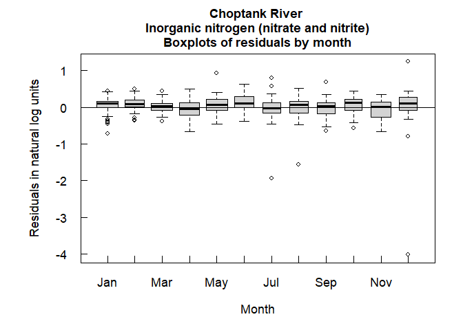
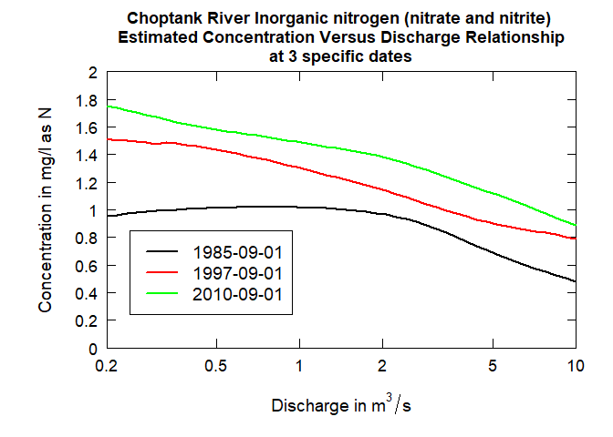
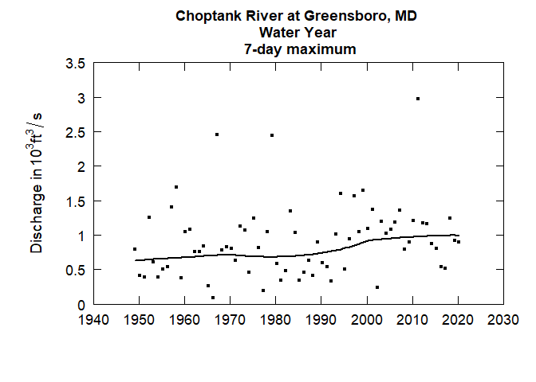
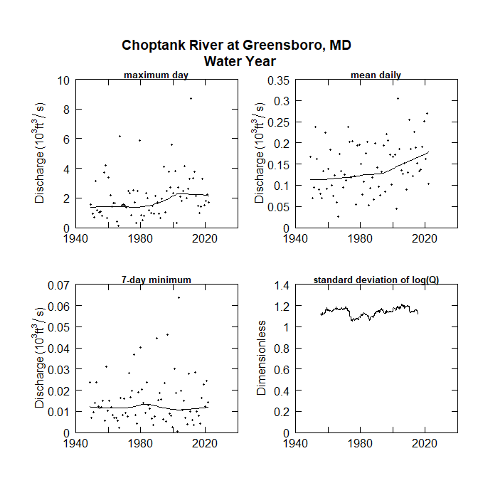
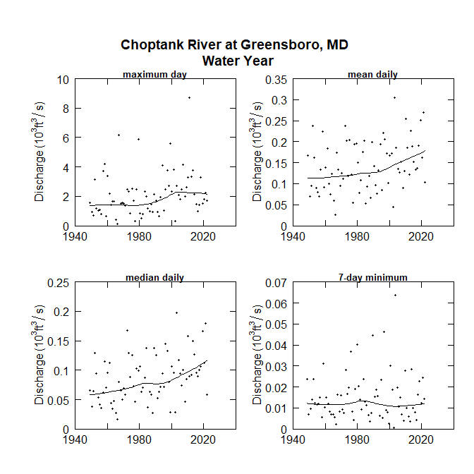

Exploration and Graphics for RivEr Trends (EGRET): An R-package for the analysis of long-term changes in water quality and streamflow, including the water-quality method Weighted Regressions on Time, Discharge, and Season (WRTDS).
The link for the official USGS publication user guide is here:
https://pubs.usgs.gov/tm/04/a10/
Package Installation
To install the EGRET package, you must be using R 3.0 or greater and run the following command:
install.packages("EGRET")
To get cutting-edge changes, install from GitHub using the remotes packages:
library(remotes) install_github("USGS-R/EGRET")
Background:
Evaluating long-term changes in river conditions (water quality and discharge) is an important use of hydrologic data. To carry out such evaluations, the hydrologist needs tools to facilitate several key steps in the process: acquiring the data records from a variety of sources, structuring it in ways that facilitate the analysis, routines that will process the data to extract information about changes that may be happening, and graphical techniques that can display findings about change. The R package EGRET (Exploration and Graphics for RivEr Trends) was developed for carrying out each of these steps in an integrated manner. It is designed to accept easily data from three sources: U.S. Geological Survey hydrologic data, Water Quality Portal Data (currently including U.S. Environmental Protection Agency (EPA) STORET data, and USDA STEWARDS data), and user-supplied flat files. The EGRET package has components oriented towards the description of long-term changes in streamflow statistics (high flow, average flow, and low flow) as well as changes in water quality. For the water-quality analysis, it uses Weighted Regressions on Time, Discharge and Season (WRTDS) to describe long-term trends in both concentration and flux. EGRET also creates a wide range of graphical presentations of the water-quality data and of the WRTDS results. The following report serves as a user guide, providing detailed guidance on installation and use of the software, documentation of the analysis methods used, as well as guidance on some of the kinds of questions and approaches that the software can facilitate.
EGRET includes statistics and graphics for streamflow history, water quality trends, and the statistical modeling algorithm Weighted Regressions on Time, Discharge, and Season (WRTDS). Please see the official EGRET User Guide for more information on the EGRET package:
https://doi.org/10.3133/tm4A10 The best ways to learn about the WRTDS approach is to read the User Guide and two journal articles. These articles are available, for free, from the journals in which they were published. The first relates to nitrate and total phosphorus data for 9 rivers draining to Chesapeake Bay. The URL is:
https://onlinelibrary.wiley.com/doi/full/10.1111/j.1752-1688.2010.00482.x.
The second is an application to nitrate data for 8 monitoring sites on the Mississippi River or its major tributaries. The URL is:
http://pubs.acs.org/doi/abs/10.1021/es201221s
For a thorough discussion of the generalized flow normalization method implemented in the EGRET enhancements, see the paper: “Tracking changes in nutrient delivery to western Lake Erie: Approaches to compensate for variability and trends in streamflow”:
(https://www.sciencedirect.com/science/article/pii/S0380133018302235).
Sample Workflow
WRTDS on the Choptank River at Greensboro MD, for Nitrate:
library(EGRET) ############################ # Gather discharge data: siteID <- "01491000" #Choptank River at Greensboro, MD startDate <- "" #Gets earliest date endDate <- "2011-09-30" # Gather sample data: parameter_cd<-"00631" #5 digit USGS code Sample <- readNWISSample(siteID,parameter_cd,startDate,endDate) #Gets earliest date from Sample record: #This is just one of many ways to assure the Daily record #spans the Sample record startDate <- min(as.character(Sample$Date)) # Gather discharge data: Daily <- readNWISDaily(siteID,"00060",startDate,endDate) # Gather site and parameter information: # Here user must input some values for # the default (interactive=TRUE) INFO<- readNWISInfo(siteID,parameter_cd) INFO$shortName <- "Choptank River at Greensboro, MD" # Merge discharge with sample data: eList <- mergeReport(INFO, Daily, Sample)
library(EGRET) # Sample data included in package: eList <- Choptank_eList boxConcMonth(eList)

boxQTwice(eList)

plotConcTime(eList)

plotConcQ(eList)

multiPlotDataOverview(eList)

# Run WRTDS model: eList <- modelEstimation(eList) #> #> first step running estCrossVal may take about 1 minute #> estCrossVal % complete: #> 0 1 2 3 4 5 6 7 8 9 10 #> 11 12 13 14 15 16 17 18 19 20 #> 21 22 23 24 25 26 27 28 29 30 #> 31 32 33 34 35 36 37 38 39 40 #> 41 42 43 44 45 46 47 48 49 50 #> 51 52 53 54 55 56 57 58 59 60 #> 61 62 63 64 65 66 67 68 69 70 #> 71 72 73 74 75 76 77 78 79 80 #> 81 82 83 84 85 86 87 88 89 90 #> 91 92 93 94 95 96 97 98 99 #> Next step running estSurfaces with survival regression: #> Survival regression (% complete): #> 0 1 2 3 4 5 6 7 8 9 10 #> 11 12 13 14 15 16 17 18 19 20 #> 21 22 23 24 25 26 27 28 29 30 #> 31 32 33 34 35 36 37 38 39 40 #> 41 42 43 44 45 46 47 48 49 50 #> 51 52 53 54 55 56 57 58 59 60 #> 61 62 63 64 65 66 67 68 69 70 #> 71 72 73 74 75 76 77 78 79 80 #> 81 82 83 84 85 86 87 88 89 90 #> 91 92 93 94 95 96 97 98 99 #> Survival regression: Done #eList: plotConcTimeDaily(eList)

plotFluxTimeDaily(eList)
plotConcPred(eList)

plotFluxPred(eList)

plotResidPred(eList)

plotResidQ(eList)
plotResidTime(eList)

boxResidMonth(eList)

boxConcThree(eList)

plotConcHist(eList)

plotFluxHist(eList)

# Multi-line plots: date1 <- "1985-09-01" date2 <- "1997-09-01" date3 <- "2010-09-01" qBottom<-0.2 qTop<-10 plotConcQSmooth(eList, date1, date2, date3, qBottom, qTop, concMax=2,legendTop = 0.85)

q1 <- 2 q2 <- 10 q3 <- 20 centerDate <- "07-01" yearEnd <- 1980 yearStart <- 2010 plotConcTimeSmooth(eList, q1, q2, q3, centerDate, yearStart, yearEnd, legendTop = 0.55, legendLeft = 1990)
# Multi-plots: fluxBiasMulti(eList)

#Contour plots: clevel<-seq(0,2,0.5) yearStart <- 1980 yearEnd <- 2010 plotContours(eList, yearStart,yearEnd,qBottom=0.5, qTop=20, contourLevels = clevel)

plotDiffContours(eList, year0 = 1990, year1 = 2010, qBottom=0.5, qTop=20, maxDiff=0.6)

Sample workflow for a flowHistory application for the entire record
library(EGRET) # Flow history analysis # Gather discharge data: siteID <- "01491000" #Choptank River at Greensboro, MD startDate <- "" # Get earliest date endDate <- "" # Get latest date Daily <- readNWISDaily(siteID,"00060",startDate,endDate) #> There are 26494 data points, and 26494 days. # Gather site and parameter information: # Here user must input some values for # the default (interactive=TRUE) INFO<- readNWISInfo(siteID,"00060") #> Your site for streamflow data is: #> 01491000 . #> Your site name is CHOPTANK RIVER NEAR GREENSBORO, MD #> but you can modify this to a short name in a style you prefer. #> This name will be used to label graphs and tables. #> If you want the program to use the name given above, just do a carriage return, #> otherwise enter the preferred short name(no quotes): #> #> The latitude and longitude of the site are: 38.99719 , -75.78581 (degrees north and west). #> #> The drainage area at this site is 113 square miles #> which is being stored as 292.6687 square kilometers. #> #> It is helpful to set up a station abbreviation when doing multi-site studies, #> enter a unique id (three or four characters should work). It is case sensitive. #> Even if you don't feel you need an abbreviation for your site you need to enter something(no quotes): #> #> Your water quality data are for parameter number: #> 00060 #> which has the name:' Discharge, cubic feet per second '. #> Typically you will want a shorter name to be used in graphs and tables. #> The suggested short name is:' Stream flow, mean. daily '. #> If you would like to change the short name, enter it here, #> otherwise just hit enter (no quotes): #> The units for the water quality data are: ft3/s . #> It is helpful to set up a constiuent abbreviation, enter a unique id #> three or four characters should work something like tn or tp or NO3). #> Even if you don't feel you need an abbreviation you need to enter something (no quotes): #> #> Required concentration units are mg/l. #> The INFO dataframe indicates: ft3/s #> Flux calculations will be wrong if units are not consistent. INFO$shortName <- "Choptank River at Greensboro, MD" eList <- as.egret(INFO, Daily, NA, NA) # Check flow history data: plotFlowSingle(eList, istat=7,qUnit="thousandCfs")

plotSDLogQ(eList)
plotQTimeDaily(eList, qLower=1,qUnit=3)
plotFour(eList, qUnit=3)

plotFourStats(eList, qUnit=3)

Model Archive
When using the WRTDS model, it is important to be able to reproduce the results in the future. The following version of R and package dependencies were used most recently to pass the embedded tests within this package. There is no guarantee of reproducible results using future versions of R or updated versions of package dependencies; however, we will make diligent efforts to test and update future modeling environments.
sessioninfo::session_info() #> ─ Session info ─────────────────────────────────────────────────────────────── #> setting value #> version R version 4.0.2 (2020-06-22) #> os macOS Catalina 10.15.5 #> system x86_64, darwin17.0 #> ui X11 #> language (EN) #> collate en_US.UTF-8 #> ctype en_US.UTF-8 #> tz UTC #> date 2020-07-15 #> #> ─ Packages ─────────────────────────────────────────────────────────────────── #> package * version date lib source #> assertthat 0.2.1 2019-03-21 [1] CRAN (R 4.0.0) #> cli 2.0.2 2020-02-28 [1] CRAN (R 4.0.0) #> crayon 1.3.4 2017-09-16 [1] CRAN (R 4.0.0) #> curl 4.3 2019-12-02 [1] CRAN (R 4.0.0) #> dataRetrieval 2.7.6 2020-03-11 [1] CRAN (R 4.0.0) #> digest 0.6.25 2020-02-23 [1] CRAN (R 4.0.0) #> dotCall64 1.0-0 2018-07-30 [1] CRAN (R 4.0.0) #> EGRET * 3.0.4.9000 2020-07-15 [1] local #> ellipsis 0.3.1 2020-05-15 [1] CRAN (R 4.0.0) #> evaluate 0.14 2019-05-28 [1] CRAN (R 4.0.0) #> fansi 0.4.1 2020-01-08 [1] CRAN (R 4.0.0) #> fields 10.3 2020-02-04 [1] CRAN (R 4.0.0) #> glue 1.4.1 2020-05-13 [1] CRAN (R 4.0.0) #> hms 0.5.3 2020-01-08 [1] CRAN (R 4.0.0) #> htmltools 0.5.0 2020-06-16 [1] CRAN (R 4.0.0) #> httr 1.4.1 2019-08-05 [1] CRAN (R 4.0.0) #> knitr 1.29 2020-06-23 [1] CRAN (R 4.0.0) #> lattice 0.20-41 2020-04-02 [2] CRAN (R 4.0.2) #> lifecycle 0.2.0 2020-03-06 [1] CRAN (R 4.0.0) #> magrittr 1.5 2014-11-22 [1] CRAN (R 4.0.0) #> maps 3.3.0 2018-04-03 [1] CRAN (R 4.0.0) #> Matrix 1.2-18 2019-11-27 [2] CRAN (R 4.0.2) #> pillar 1.4.4 2020-05-05 [1] CRAN (R 4.0.0) #> pkgconfig 2.0.3 2019-09-22 [1] CRAN (R 4.0.0) #> R6 2.4.1 2019-11-12 [1] CRAN (R 4.0.0) #> Rcpp 1.0.5 2020-07-06 [1] CRAN (R 4.0.0) #> readr 1.3.1 2018-12-21 [1] CRAN (R 4.0.0) #> rlang 0.4.6 2020-05-02 [1] CRAN (R 4.0.0) #> rmarkdown 2.3.2 2020-07-15 [1] Github (rstudio/rmarkdown@ff1b279) #> sessioninfo 1.1.1 2018-11-05 [1] CRAN (R 4.0.1) #> spam 2.5-1 2019-12-12 [1] CRAN (R 4.0.0) #> stringi 1.4.6 2020-02-17 [1] CRAN (R 4.0.0) #> stringr 1.4.0 2019-02-10 [1] CRAN (R 4.0.0) #> survival 3.1-12 2020-04-10 [2] CRAN (R 4.0.2) #> tibble 3.0.2 2020-07-07 [1] CRAN (R 4.0.0) #> vctrs 0.3.1 2020-06-05 [1] CRAN (R 4.0.0) #> withr 2.2.0 2020-04-20 [1] CRAN (R 4.0.0) #> xfun 0.15 2020-06-21 [1] CRAN (R 4.0.0) #> xml2 1.3.2 2020-04-23 [1] CRAN (R 4.0.0) #> yaml 2.2.1 2020-02-01 [1] CRAN (R 4.0.0) #> #> [1] /Users/runner/work/_temp/Library #> [2] /Library/Frameworks/R.framework/Versions/4.0/Resources/library
Reporting bugs
Please consider reporting bugs and asking questions on the Issues page: https://github.com/USGS-R/EGRET/issues
Follow @USGS_R on Twitter for updates on USGS R packages:

Subscribe
Please email questions, comments, and feedback to: egret_comments@usgs.gov
Additionally, to subscribe to an email list concerning updates to these R packages, please send a request to egret_comments@usgs.gov.
Code of Conduct
We want to encourage a warm, welcoming, and safe environment for contributing to this project. See the code of conduct for more information.
Package Support
The Water Mission Area of the USGS has supported the development and maintenance of the EGRET R-package. Further maintenance is expected to be stable through September 2019. Resources are available primarily for maintenance and responding to user questions. Priorities on the development of new features are determined by the EGRET development team.

Sunset date
Funding for EGRET currently expires summer 2019. Expectations are that maintenance and customer service will continue to be supported past that date.
How to cite EGRET:
citation(package = "EGRET") #> #> To cite EGRET in publications, please use: #> #> Hirsch, R.M., and De Cicco, L.A., 2015, User guide to Exploration and #> Graphics for RivEr Trends (EGRET) and dataRetrieval: R packages for #> hydrologic data (version 2.0, February 2015): U.S. Geological Survey #> Techniques and Methods book 4, chap. A10, 93 p., doi:10.3133/tm4A10 #> #> A BibTeX entry for LaTeX users is #> #> @InBook{, #> author = {Robert M. Hirsch and Laura A. {De Cicco}}, #> title = {User guide to Exploration and Graphics for RivEr Trends (EGRET) and dataRetrieval: R packages for hydrologic data}, #> publisher = {U.S. Geological Survey}, #> address = {Reston, VA}, #> booktitle = {Techniques and Methods}, #> institution = {U.S. Geological Survey}, #> year = {2015}, #> chapter = {A10}, #> url = {https://pubs.usgs.gov/tm/04/a10/}, #> }
Disclaimer
This software has been approved for release by the U.S. Geological Survey (USGS). Although the software has been subjected to rigorous review, the USGS reserves the right to update the software as needed pursuant to further analysis and review. No warranty, expressed or implied, is made by the USGS or the U.S. Government as to the functionality of the software and related material nor shall the fact of release constitute any such warranty. Furthermore, the software is released on condition that neither the USGS nor the U.S. Government shall be held liable for any damages resulting from its authorized or unauthorized use.